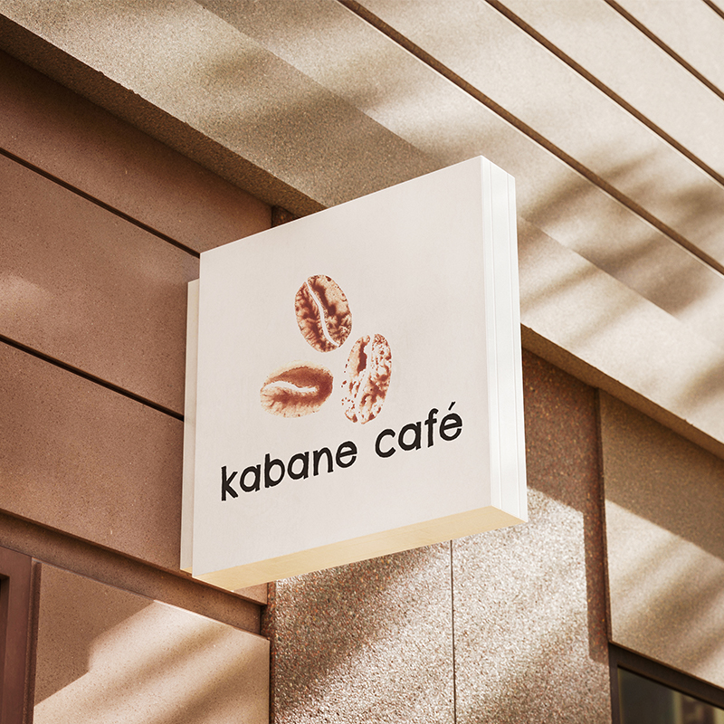
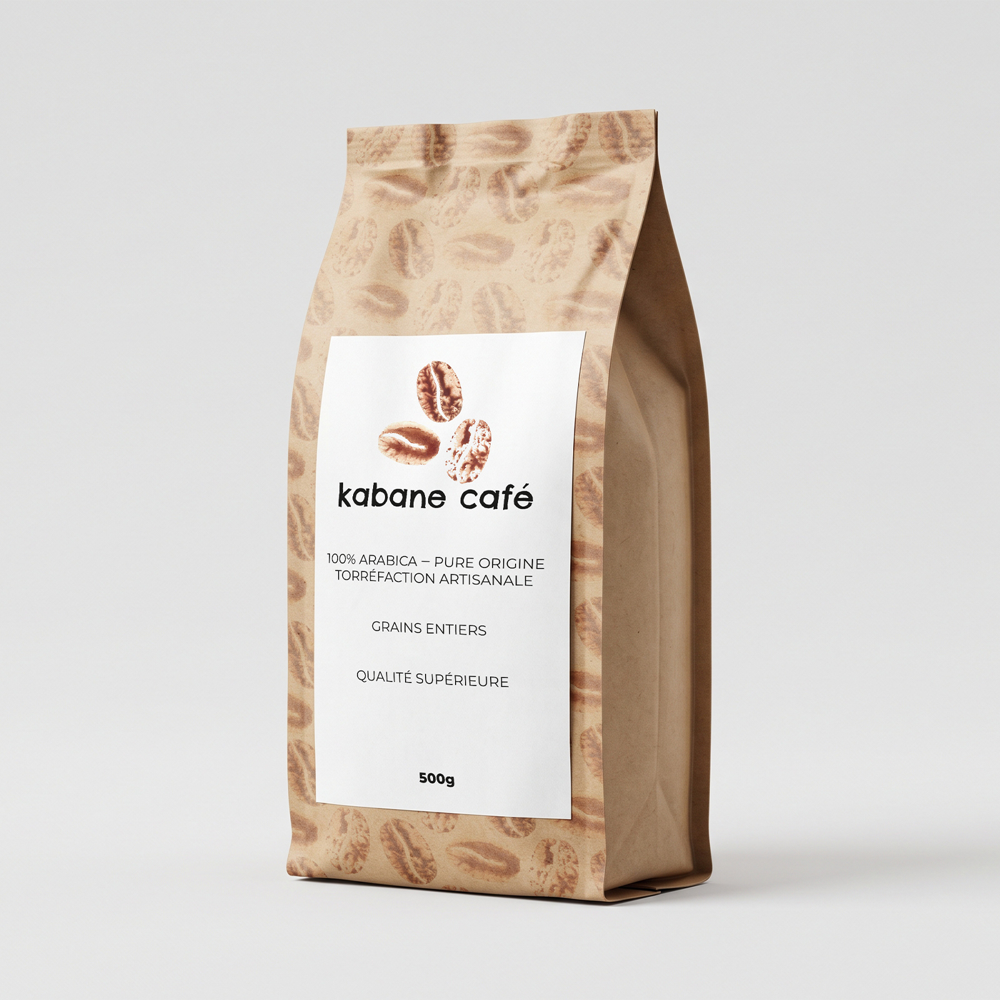
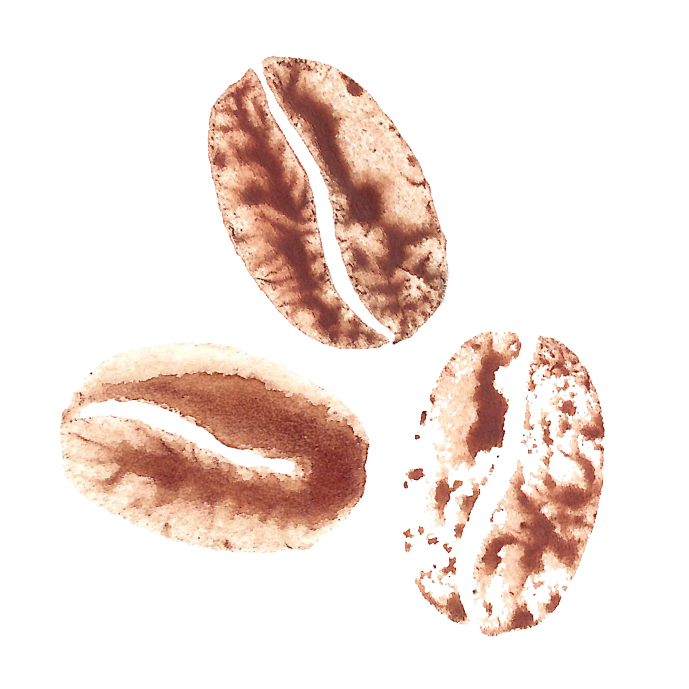
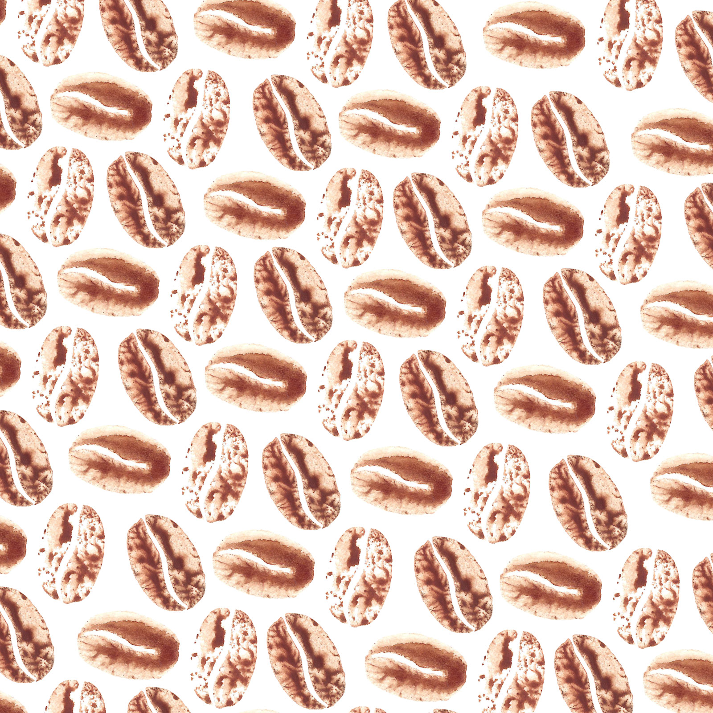
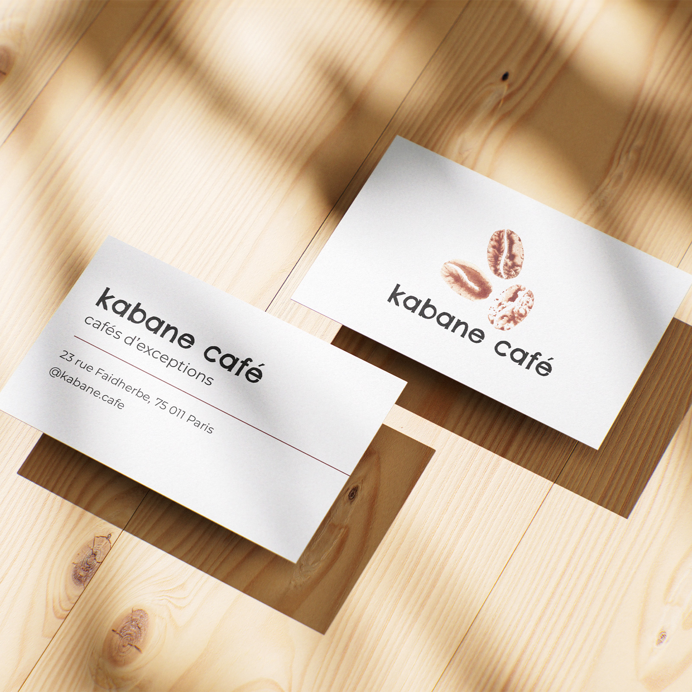

kabane café
2025 LogoCréation d'un logo fictif pour le café parisien Kabane Café.
La réalisation à l'aquarelle a permis de mettre en valeur l'atmosphère chaleureuse et conviviale du café qui invite la clientèle à découvrir de nouvelles saveurs. Mais l'ensemble garde une sobriété qui rappelle un lieu spécialiste et sérieux, proposant un service de qualité et des produits d'exceptions.




